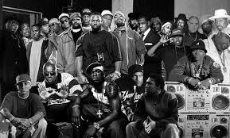

El hip-hop en realidad no es solo un genero musical, es una cultura, Como en cada cultura el hip-hop tiene sus propias expresiones artisticas, las cuales se definen en: Baile (que lo representa el break dance), Pintura (cuya máxima expresión es el graffiti) y finalmente Música (que es la música basada en bits de bateria, que llamamos RAP). Siendo el rap un género musical acuñado en los suburbios, no es de extrañar que las letras que empezaron a usarse como protesta social y denuncia, hayan influido en la juventud de ayer y de hoy. En un principio, las mayoría de las letras, abnegaban de la ostentación de la riqueza y del tráfico de drogas, siendo muy críticas con el estado o las fuerzas de la ley. No en vano, las canciones con palabras malsonantes o políticamente incorrectas se han visto censuradas en estaciones de radio y televisión, excepto en las pocas emisoras dedicadas al rap como la reconocida emisora dedicada al rap y alguna más que no merece la pena destacar. Así como algunas películas, publicaciones o videojuegos, el rap también ha sufrido críticas por el gran contenido de violencia en algunas de sus letras. Varios raperos de todo el mundo han estado bajo vigilancia por sus letras, cuando éstas hablaban de dar un golpe de estado, atentar contra miembros de las fuerzas de la ley o asesinar al presidente. Es el caso, por ejemplo, de Eminem o Sniper.
